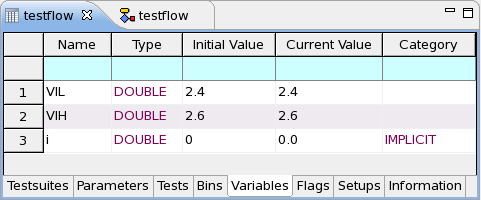

Variables page
On this page, you can add, delete, and edit variables.

An error message is shown if the limit on the number of added variables is exceeded. See limits in SmarTest system parameters - default values and limits.
Type column
This column cannot be edited. It shows the type of the variable:
|
DOUBLE |
A double number or an expression that represents a double value. Typically, such variables take result values of testsuites. |
|
STRING |
Text. String values have to be enclosed in double quotes, for example, "abc". |
|
USERFLAG |
An integer value. A user flag variable can be viewed and edited during test program execution from within the User Flags window. |
Initial Value column
The initial value is the value that the variable has when it is first created. This value is assigned to the variable when the testflow is executed manually (for example, during testflow debugging), or when the test program is started.
Whenever you enter a new value in this column, it is immediately assigned to the variable. Thus, the Current Value column also displays that value.
Current Value column
This column lets you monitor all current variable values and how they change during the test. You can even edit the current value of a variable during the test execution. This feature is particularly useful in combination with the Hold or Hold on Fail test suite flag.
If you enter a value in this column, it is immediately assigned to the variable. The variable keeps this value until either another value is assigned to it or it is re-initialized.
Category column
- SmarTest 6.5.2 and later:
The column is not shown in SmarTest 6.5.2 and later. Variables must always be defined in the Variables page before they can be assigned in an Assign Value node.
- SmarTest 6.5.0 or earlier:
This column is not editable. It displays IMPLICIT for the variables defined in the Assign Value node or is empty for the variables defined on the Variables page.
Example
You can use a user flag to branch in a testflow, depending on the current value of the flag. This lets you control the testflow execution during a test program run.
Functional changes
- Introduced before SmarTest 6.3.2
- SmarTest 6.5.2: You can add or delete a variable on the Variables page.
- SmarTest 6.5.2: Defining the variables in the Assign Value node is not supported.
- SmarTest 7.5.1: Link to limit on number of variables.